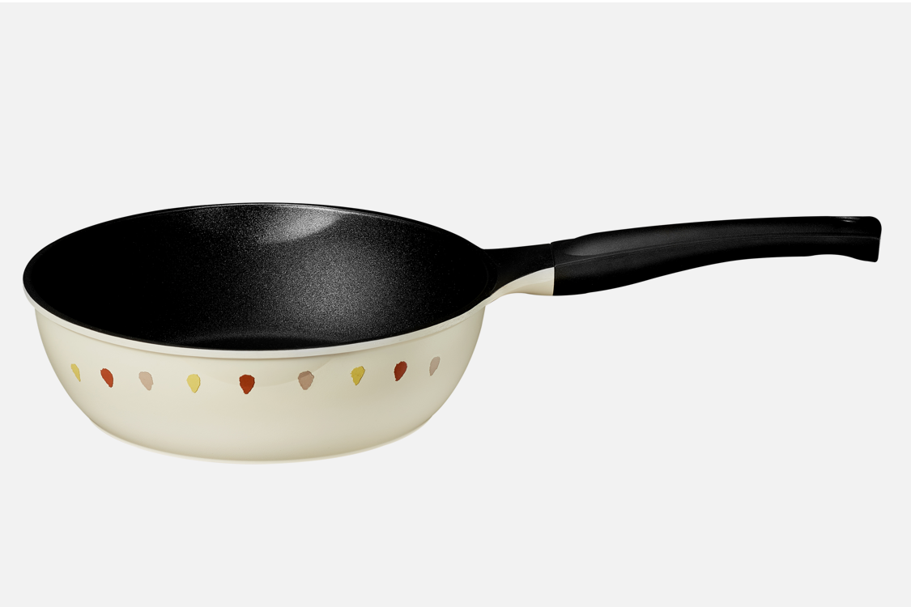

Corelle Brands
검색세계적인 코렐의 노하우로 만든
조리과정의 건강함까지 생각한 쿡웨어
Introduction
코렐쿡은 글로벌 식기 브랜드 파워 1위의 코렐이
키친웨어 카테고리에서의 노하우로 런칭한
뛰어난 기술력의 새로운 쿡웨어 브랜드입니다.
Why
Corelle Cookware
코렐 쿡웨어가 사랑받는 이유

코렐의 키친노하우를 담은
우수한 제품력
독일 기술력을 담은 안전하고 우수한 경도의 피크 코팅,
티타늄 플라즈마 공법을 적용한 프라이
그리고 특허받은 고강도 공법의
건강한 내열자기 냄비까지.
코렐 브랜드만이 쌓아온 키친웨어에서의
노하우를 담아 탄생한 안전한 코렐쿡입니다.
효율적인 보관
손잡이 고리를 제품끼리 연결하면 프라이팬 바닥면이
닿지않아 스크래치 없이 보관이 가능합니다.
조리부터 테이블 세팅까지
코렐에서 많은 사랑을 받은 패턴이 주방에 활력을 더하며
감각적인 디자인으로 조리부터 테이블 세팅까지
함께 합니다.
Corelle Cook Line
코렐쿡의 제품 라인을 소개합니다.
-

Master Peek
안전하고 강력한 내구성의 PEEK소재 <마스터 피크>
제품보기
적은 기름으로도 건강하게 5중구조로 스크레치에도 직
접 노출이 없는 내구성과 안전함. 조리후 음식물을 편하
게 담을 수 있는 홈과 손목에 무리가 가지않는 인체공학
디자인 -
Titanium Plasma
인체에 무해한 티타늄 플라즈마 공법 <티타늄 플라즈마>
제품보기
티타늄 도트 스프레이 방식으로 2배이상 긴 내구성과
유해물질 차단. 편리한 그립감의 실리콘 핸들로 손목이
아프지 않아요. 가스렌지, 인덕션, 하이라이트
사용이 가능 -
Pot
특허받은 고강도 공법으로 안전하고 건강한
제품보기
에코 쿠킹을 위한 내열자기 <내열자기>
세계에서 가장 좋은 품질로 유명한 짐바브웨 최고 순도
천연 페탈라이트 사용. 초고온에서 3번 소성하여 금속
보다 강한 경도를 가진 특허받은 재질. 무균열로 깨끗하
고 안전하게 음식을 골고루, 그리고 빠르게 익혀줍니다